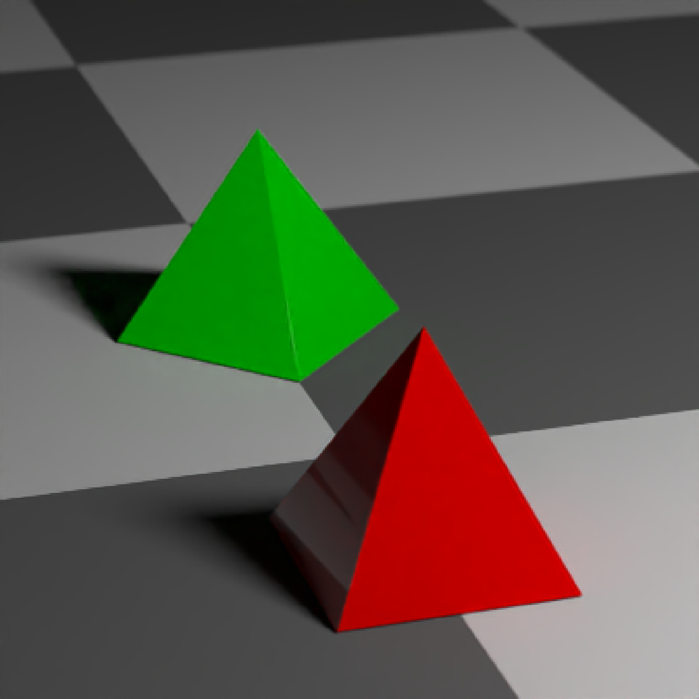
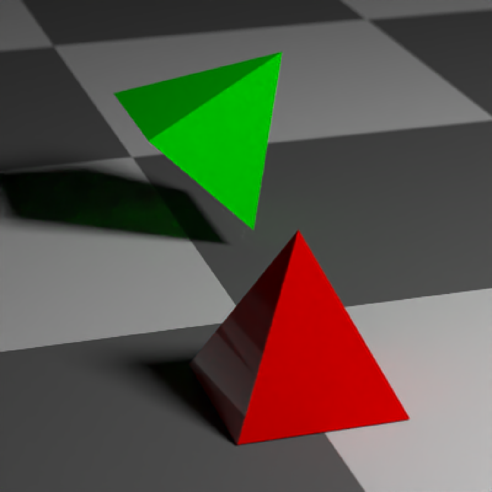

CSG Rotate
csg_rotate( object, pivot_point = c(0, 0, 0), angles = c(0, 0, 0), order_rotation = c(1, 2, 3), up = c(0, 1, 0), axis_x = NULL, axis_z = NULL )
| object | CSG object. |
|---|---|
| pivot_point | Default `c(0,0,0)`. Pivot point for the rotation. |
| angles | Default `c(0, 0, 0)`. Angle of rotation around the x, y, and z axes, applied in the order specified in `order_rotation`. |
| order_rotation | Default `c(1, 2, 3)`. The order to apply the rotations, referring to "x", "y", and "z". |
| up | Default `c(0,1,0). Alternative method for specifying rotation--change the new "up" vector. |
| axis_x | Default `NULL`, computed automatically if not passed. Given the `up` vector as the y-axis, this is the x vector. |
| axis_z | Default `NULL`, computed automatically if not passed. Given the `up` vector as the y-axis, this is the z vector. |
List describing the triangle in the scene.
# \donttest{ #Rotate a pyramid (translating it upwards because the object is scaled from the center): generate_ground(material=diffuse(checkercolor="grey20")) %>% add_object(csg_object(csg_pyramid(z=1,y=-0.99), material=glossy(color="red"))) %>% add_object(csg_object(csg_rotate(csg_pyramid(z=-1.5,y=-0.99), pivot_point = c(0,-0.99,-1.5),angle=c(0,45,0)), material=glossy(color="green"))) %>% add_object(sphere(y=5,x=5,z=5,material=light(intensity=40))) %>% render_scene(sample_method="stratified",lookfrom=c(-3,4,10), fov=15, lookat=c(0,-0.5,0),clamp_value=10)#Rotate by specifying a new up vector: generate_ground(material=diffuse(checkercolor="grey20")) %>% add_object(csg_object(csg_pyramid(z=1,y=-0.99), material=glossy(color="red"))) %>% add_object(csg_object(csg_rotate(csg_pyramid(z=-1.5,y=-0.49), pivot_point = c(0,-0.49,-1.5), up =c(1,1,0)), material=glossy(color="green"))) %>% add_object(sphere(y=5,x=5,z=5,material=light(intensity=40))) %>% render_scene(sample_method="stratified",lookfrom=c(-3,4,10), fov=15, lookat=c(0,-0.5,0),clamp_value=10)# }